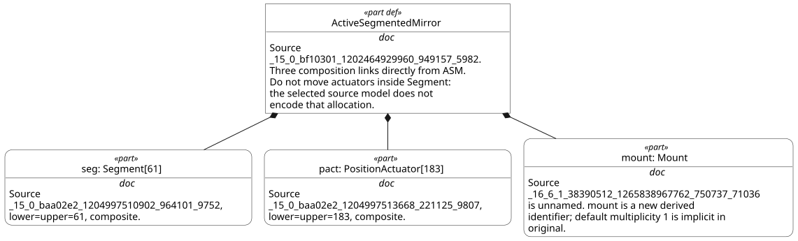
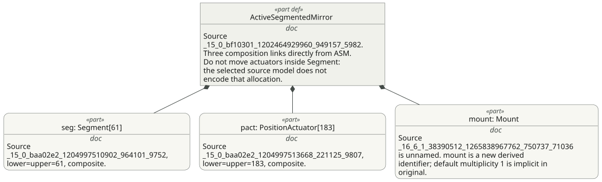
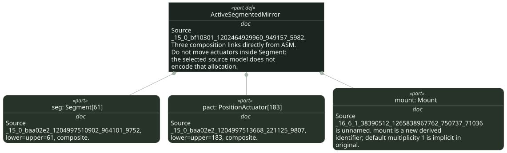
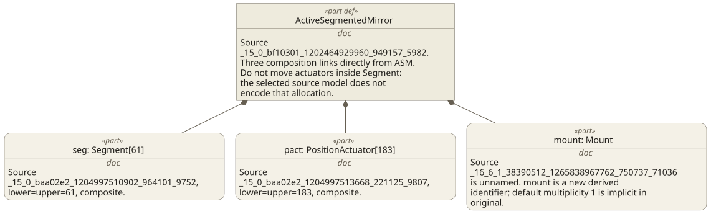
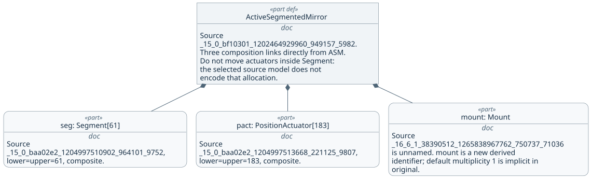

The same native-generated part definition, three part usages and three ownership diamonds. Colors change; all labels, source IDs, geometry and links stay identical. Pilot 2025-09 / kernel 0.52.0; explicit installed Smetana layout fallback. Private visibility is retained in facts but omitted by this native view. No simulation or full graphical-conformance claim.




